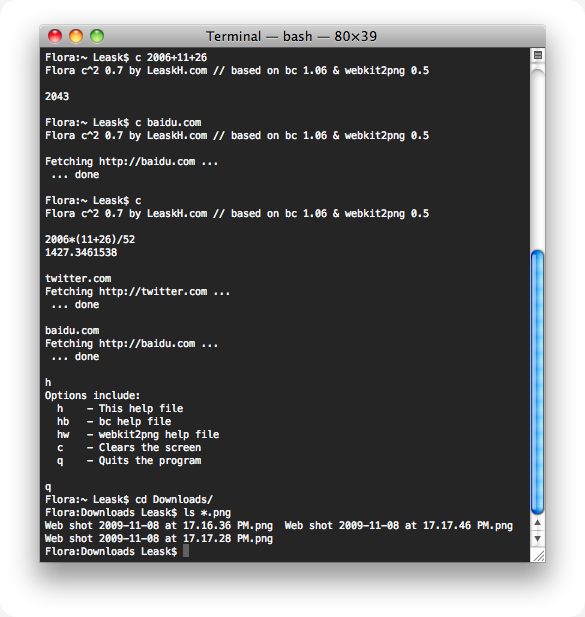

程序员通常会遇到需要计算的时候，然而并不单单是加减乘除，我们需要带有表达式支持的计算功能。我想在*nix上没有比bc更加便利的了，但是bc有一点让我很压抑的就是bc的小数处理需要在每次进入bc的时候设置，十分不友好。于是就萌生了用shell脚本封装一下bc的想法。于是我封装出一个计算器[C]alculator。
设计师常常有截取网页全图的需要，于是我曾撰文《在Mac上通过Terminal截取网页全图 / Full Page Screenshots by Terminal On a Mac》（URL：http://honeonet.spaces.live.com/blog/cns!15BAC1A170471DB!15092.entry）提出通过webkit2png截取网页全图的方法。但是webkit2png使用也并不太便利：默认情况下每次使用都要求输入webkit2png脚本所在的位置，默认参数会输出3个尺寸的图片，默认参数下图片会存储在shell当前的工作目录（并不人性化），默认情况下不能识别“www.yourdomain.com”或者“yourdomain.net”这样的地址（webkit2png要求输入完整的，如“http://www.yourdomain.com”这样的地址），默认情况下webkit2png生成的文件名也不符合Mac上截图热键生成的带有时间信息的文件名的习惯……有没有办法让webkit2png更加聪明好用呢？于是我又把webkit2png封装了一下，得到一个Web Pages [C]atcher。
昨晚突发奇想，把两个类似的脚本整合一下：
[C]alculator * Web Pages [C]atcher = c * c = c ^2
于是我把我的脚本命名为Flora c^2，主要是应付我的工作要求，顺便写出来分享给大家，希望也能为大家的工作提高一点点效率。
脚本需要你先下载好webkit2png，方法见我上面提到的文章，然后在脚本中注释掉以下这行，如：
# bitmapdata.representationUsingType_properties_(AppKit.NSPNGFileType,None).writeToFile_atomically_(filename + "-full.png",objc.YES) 【去掉】
添加下面一行：
bitmapdata.representationUsingType_properties_(AppKit.NSPNGFileType,None).writeToFile_atomically_(filename + ".png",objc.YES) 【添加】
然后保存我下面的代码为shellscript，然后和webkit2png放在同一个文件夹，设置好文件夹和脚本的权限都是允许执行的，如果不和你的程序名称冲突，建议把文件名存为“c”（就一个小写c就好了，便于执行）。 // 注意了，别忘记你可能还需要把你的脚本文件夹添加到$PATH环境变量中！
代码如下：
#!/bin/bash
#################################################
# Flora c^2 0.7
#################################################
# What's c^2?
# c^2 for [C]alculator & Web Pages [C]atcher
# Code by LeaskH.com
# November 7, 2009
#################################################header ()
{
echo "Flora c^2 0.7 by LeaskH.com // based on bc 1.06 & webkit2png 0.5"; echo "";
}fnwebkit2png()
{
python "$(dirname "$0")"/webkit2png -W 1024 -H 768 -F -o "Web shot `date "+%Y-%m-%d at %H.%M.%S %p"`" -D "~/Downloads" $1; echo "";
}fnbcexec()
{
echo "scale=7; $1" | bc; echo "";
}calexec()
{
while true; do
if [ -n "$strfloratc" ]; then
if [ "$strfloratc" != "" ] && [ "$strfloratc" = "h" ]; then
echo "Options include:";
echo " h - This help file";
echo " hb - bc help file";
echo " hw - webkit2png help file";
echo " c - Clears the screen";
echo " q - Quits the program";
echo "";
strfloratc="";
fi
if [ "$strfloratc" != "" ] && [ "$strfloratc" = "hb" ]; then bc -h; strfloratc=""; fi
if [ "$strfloratc" != "" ] && [ "$strfloratc" = "hw" ]; then fnwebkit2png --help; strfloratc=""; fi
if [ "$strfloratc" != "" ] && [ "$strfloratc" = "q" ]; then exit; fi
if [ "$strfloratc" != "" ] && [ "$strfloratc" = "c" ]; then clear; header; strfloratc=""; fi
if [ "$strfloratc" != "" ] && [ "${strfloratc:0:4}" = "http" ]; then fnwebkit2png $strfloratc; strfloratc=""; fi
if [ "$strfloratc" != "" ] && ([ "${strfloratc:0:3}" = "www" ] || [ "${strfloratc:0:3}" = "wap" ]); then fnwebkit2png http://$strfloratc; strfloratc=""; fi
if [ "$strfloratc" != "" ] && ([ "${strfloratc:(-3):3}" = "com" ] || [ "${strfloratc:(-3):3}" = "net" ]); then fnwebkit2png http://$strfloratc; strfloratc=""; fi
if [ "$strfloratc" != "" ]; then fnbcexec $strfloratc; strfloratc=""; fi
fi
if [ $1 = true ]; then
read -p "" strfloratc;
calexec true $strfloratc;
else
exit;
fi
done
}header;
strfloratc=$1;
if [ -n "$1" ]; then
calexec false;
else
calexec true;
fi
exit 0;
ok，就那么简单。
下面看看执行效果：

上图演示内容：
文件名的设定我按照Mac的习惯设置，Mac上的图片截取文件名为：“Screen shot 2009-11-06 at 12.25.15 PM.png”，于是我设定的截图文件名为：“Web shot 2009-11-08 at 17.17.46 PM.png”。
截图文件保存在~/Downloads文件夹。通过h命令查看程序帮助，通过q命令退出程序。
由于最近很多工作需要查询SQLite，所以未来我可能在脚本上加入查询和写入SQLite的便捷功能，有相关需要的朋友请留意。